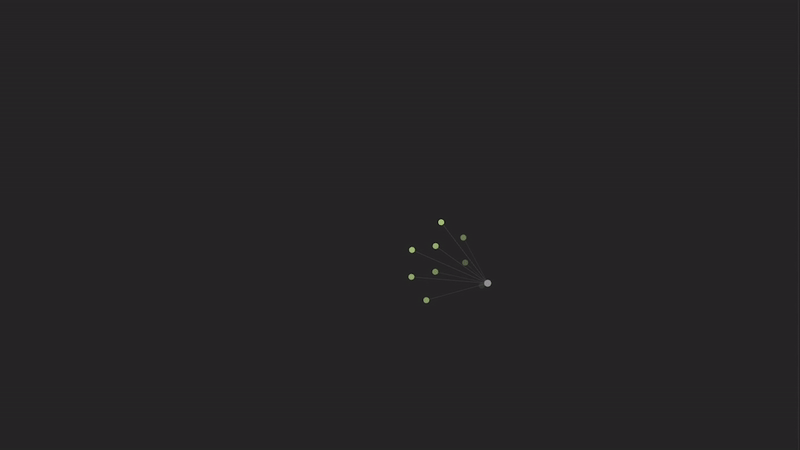
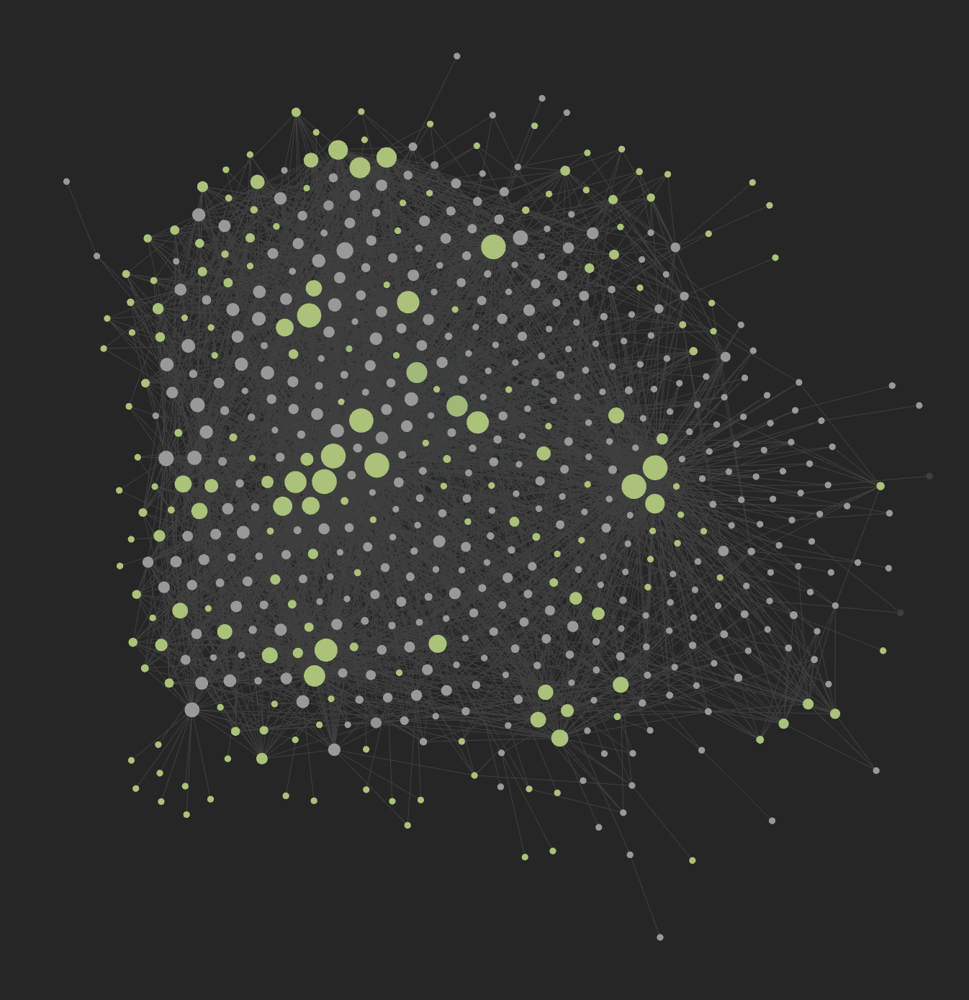

A Year of Using Obsidian
Obsidian is a knowledge base application and markdown editor. While my primary uses for it have not been the former, it has been my favorite way to organize and edit markdown files.
Wait...what is Obsidian?
While you may not have heard of Obsidian, I’m sure you’ve heard of Notion—what I would consider to be the most popular knowledge base application out there. Knowledge base applications are tools designed to organize and connect your information, such as notes, tasks, and references, into a cohesive system.
The main difference is Notion keeps all of your assets—notes, images, backlinks—inside their proprietary platform. Obsidian is different—it acts as a layer or interface for your locally-stored files. This means you maintain full control of your data while still enjoying the benefits of an advanced organizational system. (I’ll get to why that’s one of Obsidian’s biggest strengths later.)
What are markdown files?
Markdown files (.md) are plain text documents that use a simple markup language called "Markdown" to add formatting elements like headings, lists, bold text, and links. It’s a great middle ground for genuine plain text files—having the ability to add basic formatting—and HTML.
I was introduced to markdown files in grad school taking a second-level statistics and analysis course. We used markdown files to create workbooks for our RStudio projects. (RStudio is an integrated development environment designed specifically for the R programming language, which is primarily used for statistical computing.) I also used markdown files as part of my capstone project digitizing the journals of Virginia Woolf.
What I loved about markdown is I can add formatting, but I can do so much neater than if I used HTML. The syntax was more user-intuitive. For instance, the title of this blog post would be ‘# A Year of Using Obsidian’ rather than ‘<h1>A Year of Using Obsidian‘</h1>’. Alternatively, I can write paragraphs as I would in a text file without using HTML paragraph syntax.
How I use Obsidian
I use Obsidian in two ways: daily notetaking and storing all my writing—longform novels to shortform blog posts (like this one).
Obsidian works in ‘vaults,’ which live on your device. You can use Obsidian Sync, which stores your files on a cloud service you can access from any device, but mine live on my home server so I can connect to them from any device on my network.
The vault works like any documents folder. As you create more folders inside your vault using the Obsidian interface, it replicates and stores them on your device as markdown files. You can go into the folder on your device and open them using any plain text editor, or just use Obsidian’s interface to interact with them.
Each day, I create a new Daily Note. This note contains my schedule as well as a to-do list. Throughout the day, I can add meeting notes and detail projects I’m working on. Now, this is where Obsidian’s key features come into play, making it more than a simple text file interface: I can add tags to each of my tasks. My tags include people’s names, the category of meeting or project, etc... This comes in handy because if I ever want to reference meetings I had with a colleague, I can simply click on their tag and every meeting I had with them gets pulled up in a side column.
When I was building a home server over the course of two months, including research, building, and troubleshooting, I was able to click on my #Server_Project tag and all my notes across every day I worked on the project was quickly available for me to navigate.
Graph view
It would be hard for me to discuss Obsidian without mentioning Graph View. Graph View is a network map that visualizes each of your notes and how they’re connected. For some—especially those who write TTRPGs using Obsidian—this can be quite visually appealing to see how their stories and characters intertwine. For me, while it still looks cool, it primarily just connects the different people I have meetings with with the days we met.

My Graph View after one year of using Obsidian.
The importance of owning your content
I mentioned before that Notion keeps all of your assets in their system. This is a problem with a lot of companies offering “solutions.” While they offer a service to make your life easier, sometimes you lose your tech independence. If Notion were to shut down, you could lose the assets you store with them. And this goes the same for a lot of similar companies.
With Obsidian, if they were to shut down tomorrow—or I just wanted to work offline—the files they helped me create are mine. The text files live on my home server and I can just as easily move them to some place else, or just edit them right there in a default text editor. I can convert them into HTML to make websites, or LaTeX to make books.
Bringing this back to Obsidian
This may have just seemed like a love letter to markdown and plain text files, but Obsidian truly is a great application. The community around it has built phenomenal plugins and themes I use everyday, and it has made my workload much more streamlined. Being able to quickly navigate every meeting note I’ve had all year in a matter of seconds has not only been valuable to myself, but colleagues who don’t want to deal with Microsoft Office’s terrible search functionality.
For me, I’m not the Obsidian user to do a lot of worldbuilding, create knowledge bases, or a second brain. I’m the user who wants a great interface for my markdown files that has a lot of flexibility based on how my needs change.